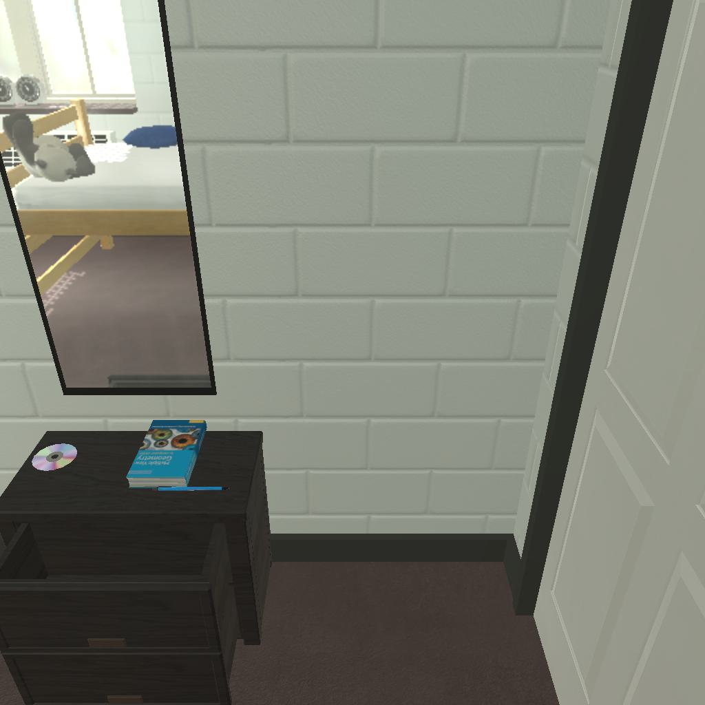
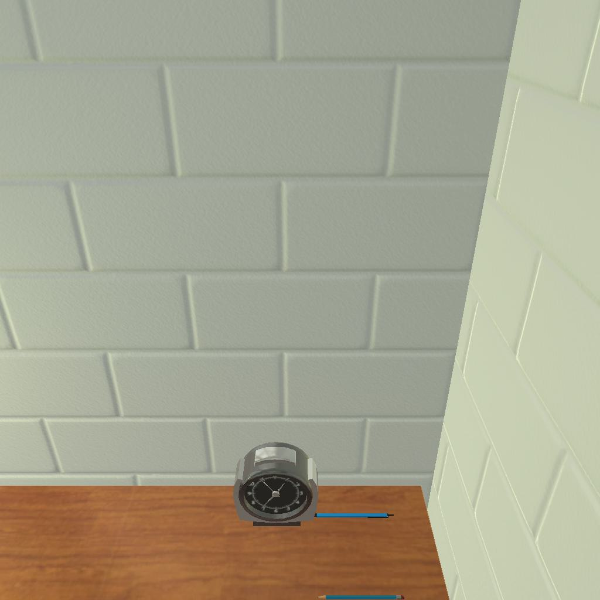
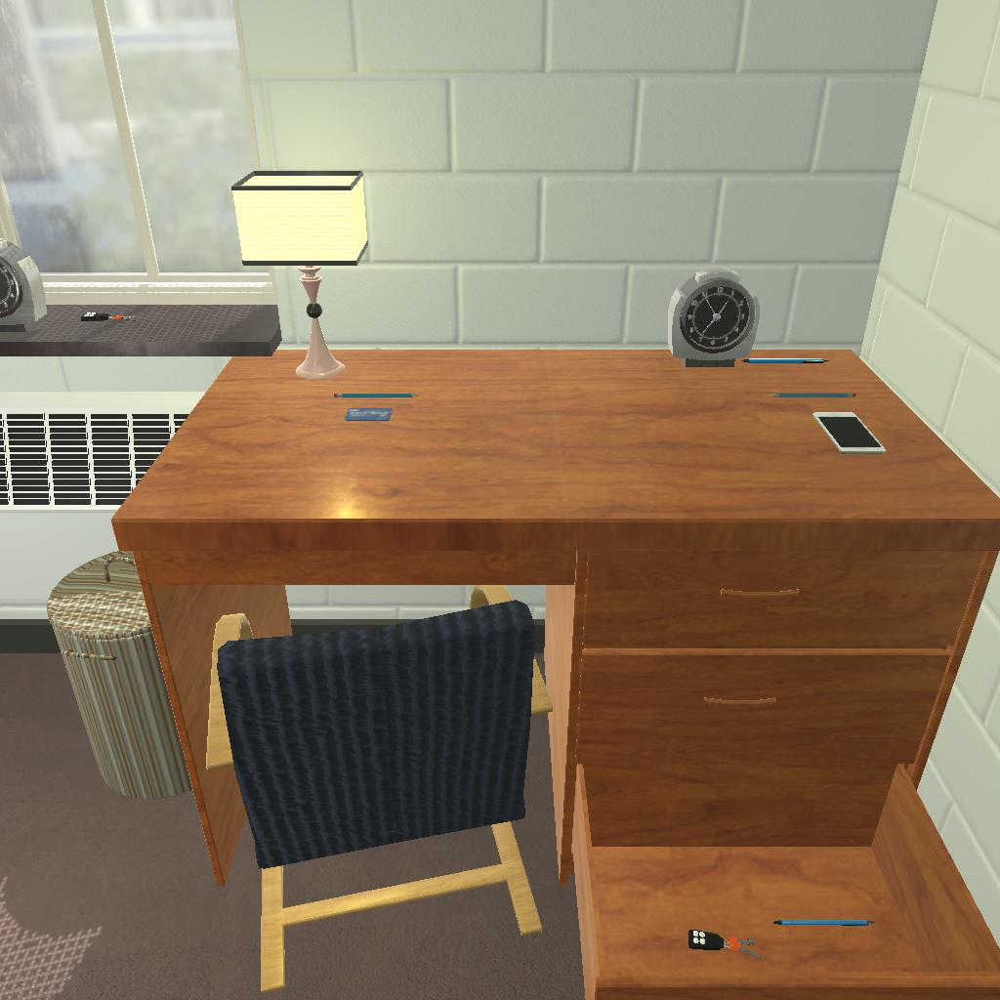

---------------------------------------------------------task: 8---------------------------------------------------------
--------------------------------------------------------------------------------------------------------------------------------------------------------------------
--------------------------------------------------------------------------------------------------------------------------------------------------------------------
Step:--------------------------------------------------------------------------16-------------------------------------------------------------------------------
----------------------------------------
VLM Prompt:
Image1:
Image2:
Image3:
**Instruction**
1. Analyze the provided images to identify all visible household objects and compare the difference between images (e.h. whether the object is opened or not and taken on hand or not), focusing on those relevant to the task description "put some laptop on desk."
2. Use the analysis of images and the task hint "The agent must find an object of the desired type, pick it up, find the correct location to place it, and put it down there." to answer the question: what is the most reasonable action in the choices for the task description "put some laptop on desk"?
3. Decide and write the answer using the template: The answer is: (i): , where i is the real number. If there is no desired object in images, search every place based on **Initial Observation** to find the object. And if no one is exactly correct, choose a similar answer.
**Initial Observation**
You are in the middle of a room. Looking quickly around you, you can see bed (1), garbagecan (1), desk (1), sidetable (1), drawer (1-5), laundryhamper (1)
**Answer Choices**
(1): go to bed 1
(2): go to garbagecan 1
(3): go to sidetable 1
(4): go to drawer 1
(5): go to drawer 2
(6): go to laundryhamper 1
(7): go to drawer 3
(8): go to drawer 4
(9): open drawer 5
(10): close drawer 5
(11): examine drawer 5
**Answer**
Let's think step by step by following the instructions.
----------------------------------------
----------------------------------------
Original Response:
First, we analyze the images:
Image 1: We see a mirror reflecting a bed with a blue pillow, a wall-mounted TV, and a small nightstand with a CD and a blue book on top. There is no laptop visible in this image.
Image 2: We see a close-up of a round clock on a wooden surface with two blue pens next to it. There is no laptop visible in this image.
Image 3: We see a desk with a lamp, a round clock, two blue pens, and a smartphone on it. A chair with a blue cushion is in front of the desk, and there is a trash can and a laundry hamper visible in the background. There is no laptop visible in this image.
From the initial observation, we know there are several drawers. Since the task is to "put some laptop on desk," we need to find a laptop first. The images provided do not show a laptop on the bed, sidetable, or laundry hamper, and there is no indication that a laptop would be in the garbage can.
Based on the task hint that we need to "find an object of the desired type, pick it up, find the correct location to place it, and put it down there," the most reasonable action would be to search the drawers, as that is a common place to store a laptop when not in use.
Therefore, the most reasonable action would be to start searching the drawers. Since we do not see any open or examined drawers in the images, we should start by examining them to find a laptop.
The answer is: (9): open drawer 5.
----------------------------------------
----------------------------------------
>>> Refine Original VLM Response and Get Pure Action: open drawer 5
----------------------------------------
-----------------------------------------------------------------
Running time: 12.611965656280518 seconds
Total Money: 3.974750000000001
-----------------------------------------------------------------
-----------------------------------------------------------------
Text Observation:You open the drawer 5. The drawer 5 is open. In it, you see a desklamp 1, a alarmclock 1, a laundryhamperlid 1, a alarmclock 2, a cellphone 1, a keychain 2, a creditcard 1, a pen 3, a pen 1, a pencil 1, a pencil 2, and a keychain 1.
-----------------------------------------------------------------
UNSUCCEED